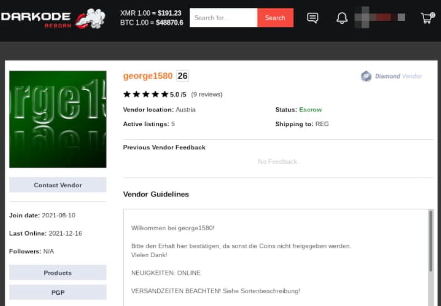
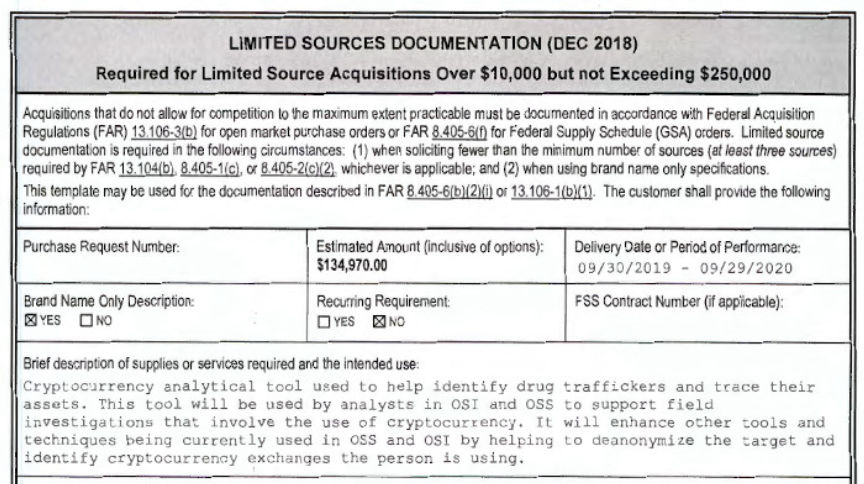
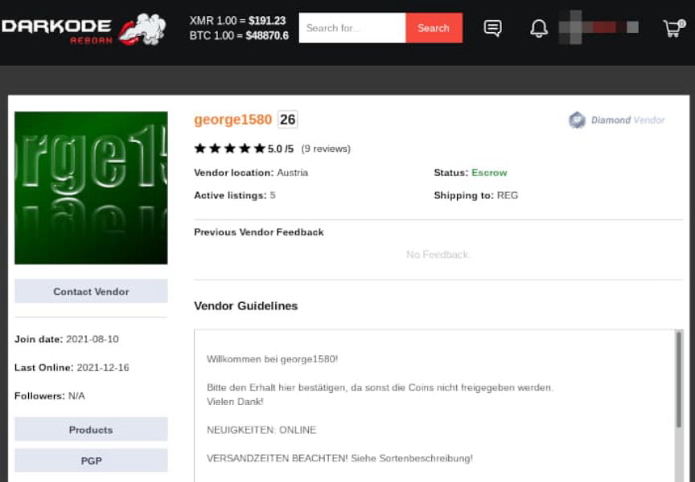
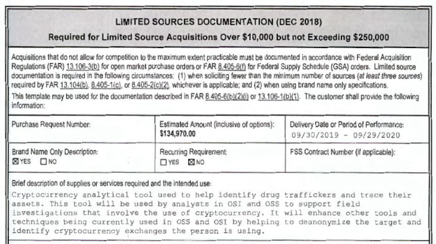

Australian Vendor Underlinecost Made Up to $25K Every Day
Three Australians made as much as $25,000 a day by selling drugs through the vendor account “underlinecost.”
(1 AUD = 0.73 USD)
In November 2021, SA Police reported arresting three people for their alleged roles in a prolific darkweb drug trafficking operation:
Two men and a woman have been arrested following an operation by the Financial and Cybercrime Investigation Branch, High Tech Crime Section into their alleged drug trafficking activities on the dark web.
On Monday 22 November, Detectives from SAPOL’s Financial and Cybercrime Investigation Branch and Australian Federal Police searched a home and business address in Adelaide and a property in Kings Park.

One million dollars in cash and $700, 000 of cryptocurrency was seized along with drugs suspected to be cocaine, LSD, cannabis, and steroids with an estimated street value of over $150, 000. In addition; Confiscations Section has seized two residential properties and a sports motorcycle, collectively valued at $1.27 million. This is the largest ever seizure of cryptocurrency by SAPOL.
A 27-year-old man and a 32-year-old woman, both from Adelaide, and a 24-year-old man from Kings Park were arrested and charged with multiple counts of commercial drug trafficking, money laundering, and importation of a large commercial quantity of LSD.
All three have appeared in the Adelaide Magistrates Court and were remanded in custody to next appear in court on 24 May 2022.
After the arrest, it appeared as if some Dread users correctly identified the vendor as underlinecost. Local news outlets have confirmed as much. The underlinecost vendor account on Darkode has also confirmed this; SA police changed the profile picture to an announcement that they had a search warrant for the account.

<code>darkodemard3wjoe63ld6zebog73ncy77zb2iwjtdjam4xwvpjmjitid.onion/underlinecost/profile</code>
It does not appear as if law enforcement accessed the account since November 2021 though.
<picture><source srcset="https://darknetlive.com/post/australian-vendor-underlinecost-made-up-to-25k-every-day/avif/lsd.avif" type="image/avif"><source srcset="https://darknetlive.com/post/australian-vendor-underlinecost-made-up-to-25k-every-day/webp/lsd.webp" type="image/webp"></picture>
Investigation
Australian law enforcement started investigating the alleged syndicate after intercepting a package from Germany containing 8,000 LSD tabs. A phone number on the package led investigators to a mailbox where they observed former police officer Thomas James Booker, 27, dropping off packages. Erin Gold, 32, who worked as “an accountant and burlesque dancer,” apparently had a relationship with Booker. They lived together and co-owned properties.
Police have not revealed how they made the connection between the identification of Booker and the underlinecost vendor account.
However, undercover law enforcement officers purchased drugs from underlinecost as a part of the investigation. Police identified fingerprints on the packages that belonged to Booker and one of his co-conspirators, Ryan Suri-Tucker, 24.
Arrests
In November 2021, the police raided a Kings Park property and arrested both men. Police reported that both men had drugs piled up around them at a desk. On the desk was a computer that was signed into the underlinecost account on a marketplace, according to the police.
Police later arrested Gold at her workplace.

During a bail hearing, a prosecutor explained the discoveries made by police after searching the property:
“When police attended the address they found the pair sitting at a desk together in front of a computer with an open TOR session, which is access to the dark web, open into the vendor account of Underline Costs with a list of unfilled orders. There were drugs seized at that location, including a commercial quantity of LSD and trafficable quantities of cocaine, cannabis, and MDMA. Those items were on the table in front of them. Some of them had been divided into smaller quantities ready for delivery. Also on the table in front of them packaged ready to be shipped in Australia Post packages. There was also a ledger book, which appeared to be a record of every sale including the amount and tracking number. It appears this was all run as a business. Police estimate they were turning over about $25,000 a day.”

Assets
A raid at the house belonging to Booker and Gold resulted in the seizure of $350,000.
A locked box at the Public Trustee’s office belonging to Booker contained $460,000.
Police froze $900,000 in cryptocurrency. All three suspects had cryptocurrency holdings.
Police have applied to freeze an apartment worth $500,000 owed by Booker and Gold, a property in Athol Park worth $500,000 owned by Gold, and a 2020 Ducati.
Updates
Gold, in her bail applications, is trying to place the blame entirely on Booker.
Gold’s lawyer:
“The involvement of Ms. Gold is in effect because of her association with her partner, one of the co-accused. She was not at that location when the arrest occurred. Ms. Gold was arrested at her workplace where she was undergoing full-time employment. In my submission, her connection to Mr. Booker is the basis for her being charged.”
Her bail application was adjourned until later this month.
(1 AUD = 0.73 USD)
In November 2021, SA Police reported arresting three people for their alleged roles in a prolific darkweb drug trafficking operation:
Two men and a woman have been arrested following an operation by the Financial and Cybercrime Investigation Branch, High Tech Crime Section into their alleged drug trafficking activities on the dark web.
On Monday 22 November, Detectives from SAPOL’s Financial and Cybercrime Investigation Branch and Australian Federal Police searched a home and business address in Adelaide and a property in Kings Park.
Cash seized during the investigation | SA Police
One million dollars in cash and $700, 000 of cryptocurrency was seized along with drugs suspected to be cocaine, LSD, cannabis, and steroids with an estimated street value of over $150, 000. In addition; Confiscations Section has seized two residential properties and a sports motorcycle, collectively valued at $1.27 million. This is the largest ever seizure of cryptocurrency by SAPOL.
A 27-year-old man and a 32-year-old woman, both from Adelaide, and a 24-year-old man from Kings Park were arrested and charged with multiple counts of commercial drug trafficking, money laundering, and importation of a large commercial quantity of LSD.
All three have appeared in the Adelaide Magistrates Court and were remanded in custody to next appear in court on 24 May 2022.
After the arrest, it appeared as if some Dread users correctly identified the vendor as underlinecost. Local news outlets have confirmed as much. The underlinecost vendor account on Darkode has also confirmed this; SA police changed the profile picture to an announcement that they had a search warrant for the account.

Very clever police.
<code>darkodemard3wjoe63ld6zebog73ncy77zb2iwjtdjam4xwvpjmjitid.onion/underlinecost/profile</code>
It does not appear as if law enforcement accessed the account since November 2021 though.
<picture><source srcset="https://darknetlive.com/post/australian-vendor-underlinecost-made-up-to-25k-every-day/avif/lsd.avif" type="image/avif"><source srcset="https://darknetlive.com/post/australian-vendor-underlinecost-made-up-to-25k-every-day/webp/lsd.webp" type="image/webp"></picture>
A listing on the underlinecost profile on Darkode market.
Investigation
Australian law enforcement started investigating the alleged syndicate after intercepting a package from Germany containing 8,000 LSD tabs. A phone number on the package led investigators to a mailbox where they observed former police officer Thomas James Booker, 27, dropping off packages. Erin Gold, 32, who worked as “an accountant and burlesque dancer,” apparently had a relationship with Booker. They lived together and co-owned properties.
Cocaine seized during the investigation | SA Police
Police have not revealed how they made the connection between the identification of Booker and the underlinecost vendor account.
However, undercover law enforcement officers purchased drugs from underlinecost as a part of the investigation. Police identified fingerprints on the packages that belonged to Booker and one of his co-conspirators, Ryan Suri-Tucker, 24.
Booker, Gold, and the other guy
Arrests
In November 2021, the police raided a Kings Park property and arrested both men. Police reported that both men had drugs piled up around them at a desk. On the desk was a computer that was signed into the underlinecost account on a marketplace, according to the police.
Police later arrested Gold at her workplace.
Marijuana seized during the investigation | SA Police
During a bail hearing, a prosecutor explained the discoveries made by police after searching the property:
“When police attended the address they found the pair sitting at a desk together in front of a computer with an open TOR session, which is access to the dark web, open into the vendor account of Underline Costs with a list of unfilled orders. There were drugs seized at that location, including a commercial quantity of LSD and trafficable quantities of cocaine, cannabis, and MDMA. Those items were on the table in front of them. Some of them had been divided into smaller quantities ready for delivery. Also on the table in front of them packaged ready to be shipped in Australia Post packages. There was also a ledger book, which appeared to be a record of every sale including the amount and tracking number. It appears this was all run as a business. Police estimate they were turning over about $25,000 a day.”
Steroids seized during the investigation | SA Police
Assets
A raid at the house belonging to Booker and Gold resulted in the seizure of $350,000.
A locked box at the Public Trustee’s office belonging to Booker contained $460,000.
Police froze $900,000 in cryptocurrency. All three suspects had cryptocurrency holdings.
Police have applied to freeze an apartment worth $500,000 owed by Booker and Gold, a property in Athol Park worth $500,000 owned by Gold, and a 2020 Ducati.
Steroids seized during the investigation | SA Police
Updates
Gold, in her bail applications, is trying to place the blame entirely on Booker.
Gold’s lawyer:
“The involvement of Ms. Gold is in effect because of her association with her partner, one of the co-accused. She was not at that location when the arrest occurred. Ms. Gold was arrested at her workplace where she was undergoing full-time employment. In my submission, her connection to Mr. Booker is the basis for her being charged.”
Her bail application was adjourned until later this month.